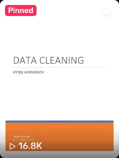
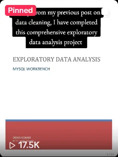
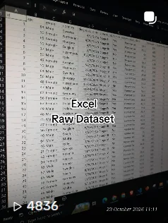
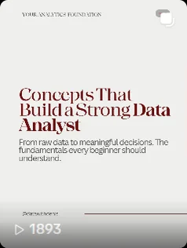

Data Analytics
Cleaning, exploring, visualizing and reporting on data.
- Python
- SQL
- Power BI
- Tableau
- Jupyter Notebook
I am a Data Analyst, Software Developer, Laravel Developer and Tech Content Creator passionate about transforming data into meaningful insights and building practical digital solutions.
I studied ICT at Jaramogi Oginga Odinga University of Science and Technology (BSc. ICT, 2021 to 2025). My data analytics skills come from that coursework and from certifications in MySQL and Tableau, analytics for project management, and Data and AI. Most of my analysis work uses SQL, Python, Power BI and Tableau.
Alongside the analysis I build software. LexOps, a Laravel legal operations and case management system for a county government setting, is my main active build. Earlier work includes Campus Crib, a PHP and MySQL hostel discovery platform that was my final-year project. I also deploy what I build, with hands-on experience running applications on a Contabo Linux VPS with Nginx and HTTPS.
My first roles were in IT operations. I supported the Office of the County Attorney at the County Government of Kilifi, then worked as a Field System Administrator Officer on a hospital management information system rollout. I currently volunteer in ICT at Kilifi County Hospital, supporting the TaifaCare rollout. Outside of work I teach data skills on TikTok as Data with Denis.
May 2026 to Present
ICT Volunteer
Kilifi County Hospital
Dec 2025 to Aug 2026
Field System Administrator Officer
Roamtech Solutions Limited, Kilifi County Referral Hospital
May 2024 to Aug 2024
IT Support Staff (Attachment)
County Government of Kilifi, Office of the County Attorney
2021 to 2025
BSc. Information and Communication Technology
Jaramogi Oginga Odinga University of Science and Technology
2017 to 2021
Kenya Certificate of Secondary Education
Ribe Boys High School
Aug 2025
Data and AI
Cyber Shujaa, USIU-Africa (graduated with a Merit)
Mar 2025
Data Analytics for Project Management
Udemy
Aug 2024
Data Analysis with MySQL and Tableau
Zindua School
The tools I use for analysis, development, databases and deployment. Each one appears in the projects and experience on this page.
Cleaning, exploring, visualizing and reporting on data.
Responsive websites and database-driven Laravel applications.
Relational design, queries and integration with applications.
Putting applications live and keeping them running.
Also in my toolkit: Excel, Docker, Snipe-IT asset management, HMIS administration, technical writing, user training, and TensorFlow and Keras from a neural network project.
I work with individuals, businesses, organizations and institutions. Pick a service and the contact form opens with it filled in.
I clean, explore and analyse your data so decisions rest on evidence.
Dashboards and reports that make the numbers easy to read and act on.
Responsive websites for businesses and organizations, front end to back end.
Laravel applications and management systems shaped around how your organization works.
Well-structured relational databases that applications and reports can rely on.
Getting applications live on a Linux VPS and keeping them healthy.
Clear educational content that explains data and technology to a wide audience.
Dashboards, analysis notebooks and applications. Projects marked "Placeholder graphic" use an illustration until a real screenshot is added.
I run Data with Denis, a TikTok channel where I explain data analytics and technology in short, practical videos. The channel has passed 46K+ followers, which tells me people value learning this way.
Making the content has sharpened a skill that matters in every role: explaining technical ideas clearly to people who are not technical, and building a community around learning.




Covers from recent Data with Denis videos on TikTok.
Have data to make sense of, a system to build or an application to deploy? Tell me what you are working on and I will get back to you. I am open to data analyst roles, development opportunities and freelance projects.